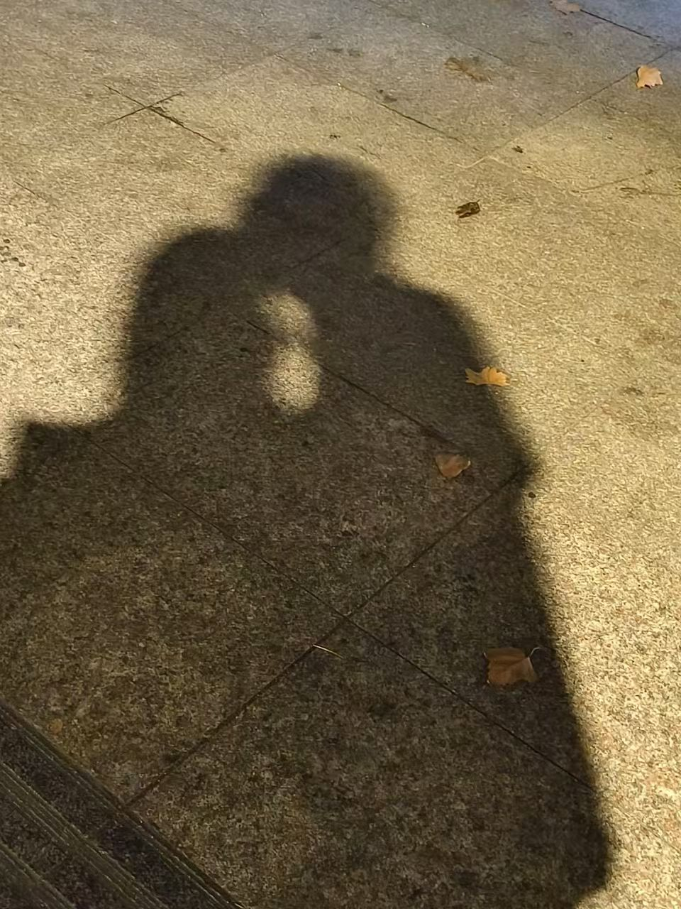

┊ ┊𝙃𝙖𝙥𝙥𝙮 𝙗𝙞𝙧𝙩𝙝𝙙𝙖𝙮┊ ┊
┊┊╭┻┻┻┻┻┻┻┻╮┊┊
┊┊┃╱╲╱╲╱╲╱╲┃┊┊
┊╭┻━━━━━━━━┻╮┊
┊┃╱╲╱╲╱╲╱╲╱╲┃┊
╱┗━━━━━━━━━━┛╲
好久不见，小猫！今天是2024年9月19日，你的十九岁生日，也是我们在一起的第二个生日，也是我们在一起的第683天。虽然现在我们隔得稍微有点远，不过没关系，
马上就可以见面啦！首先祝你生日快乐！在过去的时间里，我常常在想什么时候我们可以一直在一起，从清晨到傍晚，从盛夏到寒冬，从日月星辰到柴米油盐......
但是我常常想的还是下一次什么时候能见到你，就像每一次你奔向我的时候。安静的夜里你总是光顾我的梦乡，你总是笑着，牵着我的手，带我走过花开的地方，走过
风最温柔的地方，一点点走向我们的未来。
闲暇的时候，我喜欢看你写给我的信，你的爱洋溢在字里行间，总能让我躁动的心得到安抚。有时候，我觉得这些文字和情感会给我莫大的支持和信赖。于是我常常问自己
能给你什么，我的脾气常常不如人所愿，我的言语常常令人难以理解，这一点上我亏欠你太多，以至于经常连道歉的话都说不明白，真的很对不起。以后我一定会注意管好这个乱说话的嘴。
还有你经常送我的东西，乌乌，每次收到都特别感动特别开心，不过以后你要给自己多花一点，好好吃饭，身体健康最重要！不要想太多哦，不然晚上又一个人不睡觉，我会一直陪着小猫的。
新的一岁一定要做自己喜欢的事，到时候我们一起去看喜欢的风景，去吃喜欢的好吃的，留下更多美好的记忆。感觉说的有点乱，不过没关系，想说的话很多，以后的日子里可以慢慢说
刚上
大学的时候，虽然感觉新生活很有趣，但还是经常想起高三的那些日子，每天最期待的就是中午最后一节课和晚自习的下课铃，因为马上就可以见到你了。每天中午都在教室抱抱和亲亲，记得当时还讨论我们的未来，
到了大学，没有以前老师说的那么轻松，但是确实比高中更自由一点，有时候看到小猫压力有点大，总是会想着去抱抱你，告诉你没关系，因为你一直都是最好的。有时候我会和照片上的你说话，希望月亮能在梦中带给你
我的想念，有时候又在看着聊天记录发呆，感觉就像你在我身边，我们说说笑笑，这个时候总会有种安心的感觉，好像找到了自己的归属。虽然过的没有那么忙碌也没有那么紧张，但独自在外总会感到孤单，有时候会莫名其妙
想起没有志同道合的朋友，又感慨是不是自己太过固执，转念又想到打过照面的那么多人即使加起来也比不上我的小猫。你的爱从风中来，吹进我的眼里，我便看到浩瀚星空；吹到我心里，
我便感到心旷神怡。它长久又温柔，细腻却也热烈，带着我成长，带着我走出迷茫。于是我想独自占有这份爱，有时候会因为你分享的东西吃醋，不开心的时候感觉会变得沉默，但是你总能细心地安慰我，
渐渐地，我已经依赖上你的温柔，我们走在一起的时候，世界都变得明朗。
无论何时何地，对我而言你都是最重要最无可替代的人，新的一岁里，希望你快乐多多，见更好的山，游更好的水，
希望我们能一直牵着彼此的手，像往常一样边走边聊。
